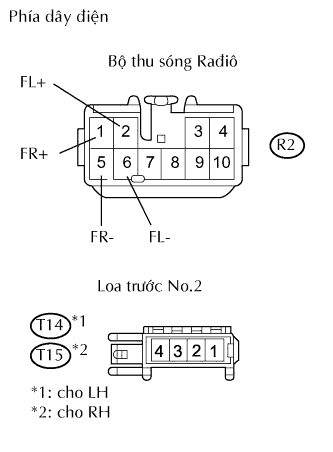

HỆ THỐNG NGHE NHÌN > Mạch loa |
| 1.KIỂM TRA LOA |
Kiểm tra rằng các loa kêu.
| Kết quả | Đi đến |
| Loa trước No. 1 không hoạt động*1 | A |
| Loa trước No. 1 không hoạt động*2 | B |
| Loa trước No. 2 không hoạt động*2 | C |
| Loa sau No.1 không hoạt động | D |
|
| ||||
|
| ||||
|
| ||||
| A | |
| 2.KIỂM TRA CỤM LOA PHÍA TRƯỚC NO.2 |
Kiểm tra loa phía trước No.1 (Xem trang Kích chuột vào đây).
|
| ||||
| OK | ||
| ||
| 3.KIỂM TRA DÂY ĐIỆN (BỘ THU SÓNG RAĐIÔ - LOA PHÍA TRƯỚC NO.1) |
Tháo giắc R2 của bộ thu sóng.
Ngắt giắc nối S15 hay S16 của bộ thu sóng.
Đo điện trở của các giắc nối phía dây điện.
| Nối dụng cụ đo | Điều kiện tiêu chuẩn |
| R2-1 (FR+) - S16-1 | Dưới 1 Ω |
| R2-5 (FR-) - S16-2 | Dưới 1 Ω |
| R2-1 (FR+) - Mát thân xe | 10 kΩ trở lên |
| R2-5 (FR-) - Mát thân xe | 10 kΩ trở lên |
| R2-2 (FL+) - S15-1 | Dưới 1 Ω |
| R2-6 (FL-) - S15-2 | Dưới 1 Ω |
| R2-2 (FL+) - Mát thân xe | 10 kΩ trở lên |
| R2-6 (FL-) - Mát thân xe | 10 kΩ trở lên |
|
| ||||
| OK | |
| 4.THÁO CỤM LOA TRƯỚC NO.2 |
Kiểm tra rằng loa trước No.2 kêu
|
| ||||
| OK | |
| 5.KIỂM TRA DÂY ĐIỆN (LOA PHÍA TRƯỚC NO.1 - LOA PHÍA TRƯỚC NO.2) |
Ngắt các giắc S15 và T14, hay S16 và T15 của loa.
Đo điện trở của các giắc nối phía dây điện.
| Nối dụng cụ đo | Điều kiện tiêu chuẩn |
| S15-1 - T14-3 | Dưới 1 Ω |
| S15-1 - Mát thân xe | 10 kΩ trở lên |
| S15-2 - T14-1 | Dưới 1 Ω |
| S15-2 - Mát thân xe | 10 kΩ trở lên |
| S16-1 - T15-3 | Dưới 1 Ω |
| S16-1 - Mát thân xe | 10 kΩ trở lên |
| S16-2 - T15-1 | Dưới 1 Ω |
| S16-2 - Mát thân xe | 10 kΩ trở lên |
|
| ||||
| OK | |
| 6.KIỂM TRA CỤM GHẾ NO.2 PHÍA SAU |
Ngắt giắc nối T14 hay T15 của loa.
Đo điện trở của loa.
| Nối dụng cụ đo | Điều kiện tiêu chuẩn |
| 1 - 2 | Dưới 1 Ω |
| 3 - 4 | Dưới 1 Ω |
| 1 - Mát thân xe | 10 kΩ trở lên |
| 3 - Mát thân xe | 10 kΩ trở lên |
|
| ||||
| OK | ||
| ||
| 7.KIỂM TRA DÂY ĐIỆN (BỘ THU SÓNG RAĐIÔ - LOA PHÍA TRƯỚC NO.2) |
|  |
Tháo giắc R2 của bộ thu sóng.
Ngắt giắc nối T14 hay T15 của loa.
Đo điện trở của các giắc nối phía dây điện.
| Nối dụng cụ đo | Điều kiện tiêu chuẩn |
| R2-1 (FR+) - T15-4 | Dưới 1 Ω |
| R2-5 (FR-) - T15-2 | Dưới 1 Ω |
| R2-1 (FR+) - Mát thân xe | 10 kΩ trở lên |
| R2-5 (FR-) - Mát thân xe | 10 kΩ trở lên |
| R2-2 (FL+) - T14-4 | Dưới 1 Ω |
| R2-6 (FL-) - T14-2 | Dưới 1 Ω |
| R2-2 (FL+) - Mát thân xe | 10 kΩ trở lên |
| R2-6 (FL-) - Mát thân xe | 10 kΩ trở lên |
|
| ||||
| OK | |
| 8.KIỂM TRA CỤM GHẾ NO.2 PHÍA SAU |
Kiểm tra rằng hư hỏng biến mất khi lắp các loa tốt khác.
|
| ||||
| NG | ||
| ||
| 9.KIỂM TRA DÂY ĐIỆN (BỘ THU SÓNG RAĐIÔ - LOA PHÍA SAU NO.1) |
Tháo giắc R3 của bộ thu sóng.
Ngắt giắc nối S16 hay S17 của loa.
Đo điện trở của các giắc nối phía dây điện.
| Nối dụng cụ đo | Điều kiện tiêu chuẩn |
| R3-1 (RR+) - S17-1 | Dưới 1 Ω |
| R3-3 (RR-) - S17-2 | Dưới 1 Ω |
| R3-1 (RR+) - Mát thân xe | 10 kΩ trở lên |
| R3-3 (RR-) - Mát thân xe | 10 kΩ trở lên |
| R3-2 (RL+) - S16-1 | Dưới 1 Ω |
| R3-6 (RL-) - S16-2 | Dưới 1 Ω |
| R3-2 (RL+) - Mát thân xe | 10 kΩ trở lên |
| R3-6 (RL-) - Mát thân xe | 10 kΩ trở lên |
|
| ||||
| OK | |
| 10.KIỂM TRA CỤM LOA SAU NO.1 |
Kiểm tra loa sau No.1 (Xem trang Kích chuột vào đây).
|
| ||||
| OK | ||
| ||